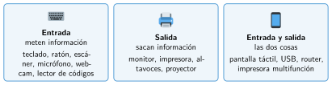

Tarjeta gráfica y periféricos
Criterios: 2a, 2c
🤔 Pienso10 min
Qué hago aquí: Piensa un momento y contesta con lo que ya sabes. No pasa nada si no lo sabes: es para empezar.
Escribe los aparatos conectados a tu ordenador del aula. ¿Cuáles meten información y cuáles la sacan?
📖 Leo y aprendo30 min
Qué hago aquí: Lee despacio, mira los dibujos y los ejemplos, y quédate con la idea clave del final.
La tarjeta gráfica convierte los cálculos de la CPU en la imagen del monitor. Las potentes tienen su propio procesador (GPU) y su memoria (VRAM) y se usan para diseño, vídeo y videojuegos. Muchos ordenadores de oficina la llevan integrada en el procesador.
Los periféricos son los aparatos que se conectan al ordenador para comunicarse con el exterior:

Los periféricos se conectan por puertos: USB (A y C), HDMI y DisplayPort (monitores), RJ45 (red), jack (audio), o sin cables, por Wi-Fi y Bluetooth. Para que funcionen, el sistema operativo necesita su controlador (driver): un pequeño programa que le explica cómo comunicarse con el aparato.
✏️ Hago130 min
Qué hago aquí: Haz las actividades en orden. Empieza siempre por las básicas.
Clasifica en la tabla: impresora, ratón, micrófono, monitor, teclado, altavoces, pendrive, escáner, pantalla táctil, webcam.
| Entrada | Salida | Entrada/salida |
|---|---|---|
Mira los puertos de tu ordenador y del monitor. Dibuja o haz una foto de cada uno y escribe su nombre y qué conectarías en él.
En una oficina hay que digitalizar 200 facturas en papel. ¿Qué periférico necesitas? ¿Y para leer los códigos de barras de la papelería? (criterio 3g)
Abre el Administrador de dispositivos (clic derecho en Inicio) y anota el nombre de tu tarjeta gráfica, de la tarjeta de red y del teclado. ¿Hay alguno con un triángulo amarillo? ¿Qué significa?
¿Necesita una administrativa una tarjeta gráfica potente? ¿Y un diseñador gráfico? Razónalo.
🚀 Amplío (si quieres saber más)
Qué hago aquí: ¿Has terminado? Lee la curiosidad o elige el reto. Es voluntario.
Investiga qué es un KVM y qué es una base de conexión (dock) para portátiles. ¿Para qué se usan en una oficina?
✅ Compruebo10 min
Qué hago aquí: Contesta sin mirar la ficha y marca cómo lo llevas.